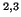

- ...
![[*]](file:/usr/share/latex2html/icons/footnote.png)
- Department of Engineering Science,
University of Oxford, Oxford OX1 3PJ.
.
- ...
- Mathematical Institute, University of Oxford, Oxford OX1 3LB.
.
- ...
- Centre for the Analysis of Time Series, London School
of Economics, London WC2A 2AE.
.
- ...
- E-mail: mcsharry@robots.ox.ac.uk
.